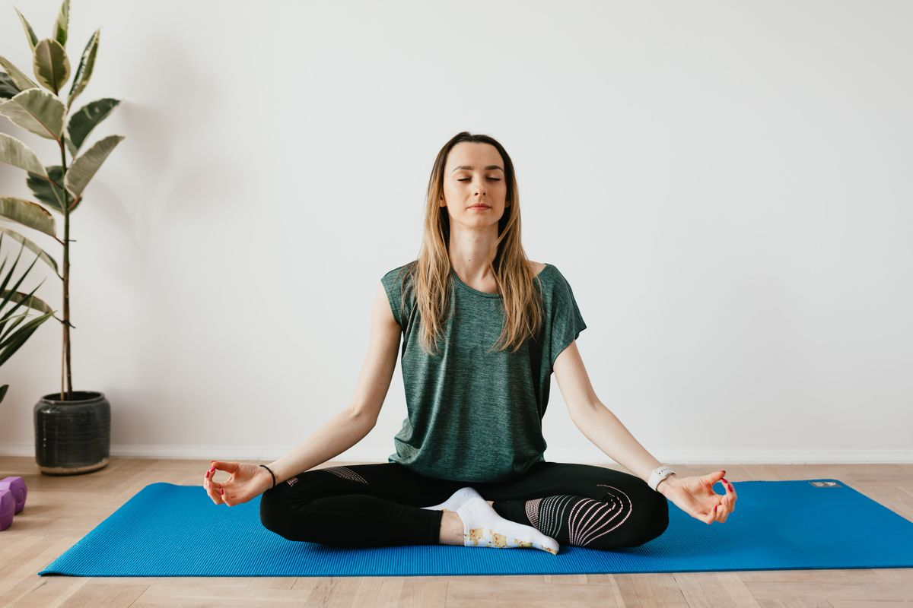

Desafio Shape de Noiva
21 Dias
O plano completo — dia a dia — de alimentação, treino, preparo e equilíbrio emocional pra você chegar no altar se sentindo exatamente como sempre imaginou.
Antes de Tudo, Respira Comigo
Se você chegou até aqui, provavelmente já tentou de tudo — dieta, chá, promessa de segunda-feira que não durou até quarta. Não é falta de disciplina. É que ninguém nunca te deu um plano desenhado especificamente pra essa fase: os últimos dias antes do casamento, quando a ansiedade dos preparativos briga com a vontade de se sentir bem no vestido.
Esse guia existe pra resolver exatamente isso. Não é sobre restrição extrema nem sobre virar outra pessoa em 21 dias — é sobre um plano estruturado, com começo, meio e fim, que trata sua alimentação, seu corpo e sua cabeça ao mesmo tempo.
Cada um dos 21 dias tem: o que comer, o que treinar (ou descansar — descanso também faz parte), uma dica prática e um espaço pra você registrar como está se sentindo. Não pule etapas. A ordem existe por um motivo.

Prefere marcar do celular?
Este PDF é pra imprimir e colar na geladeira. Mas se preferir marcar direto do celular — com progresso salvo automaticamente, sem precisar de caneta — escaneie o código ao lado ou acesse:
claude.ai/code/artifact/16c33357-d22d-4d8d-a074-f35ca4ae650e
Sumário
- Semana 0 — Antes de ComeçarPreparação
- Capítulo Mentalidade — Sua Cabeça Antes do Seu Corpo—
- Semana 1 — Choque Anti-InchaçoDias 1–7
- Semana 2 — IntensificaDias 8–14
- Semana 3 — Reta Final / Prova do VestidoDias 15–21
- Bônus — Kit Anti-Ansiedade Pré-Casamento—
- Ritual da Véspera—
- Perguntas Frequentes—
- Glossário—
- Depois do Grande DiaManutenção
Antes de Começar
Os primeiros 3 dias de qualquer desafio se decidem antes do Dia 1. Separe 20 minutos pra fazer isso agora — vai evitar que você pule refeição por não ter o que comer em casa.
Faça a primeira compra
Use a lista de compras da Semana 1 (no fim do capítulo dela) como base. Compre com 1-2 dias de antecedência do seu Dia 1.
Separe potes de vidro ou plástico
Facilita montar as refeições com antecedência (meal prep) e evita a desculpa de "não tenho tempo de cozinhar todo dia".
Escolha seu horário de treino
Não precisa ser de manhã. Escolha o horário que você realmente vai cumprir — o melhor treino é o que acontece, não o "ideal" que fica só no plano.
Marque seu Dia 1 no calendário
De preferência um dia sem evento social grande. Comece numa segunda ou num dia de rotina normal, não depois de uma festa.
Sua Cabeça Antes do Seu Corpo
Ninguém fala sobre isso o suficiente: casamento mexe mais com a cabeça do que com o corpo. E é a cabeça bagunçada que sabota o corpo — não o contrário.
A ansiedade não é fraqueza, é sinal
Comer por ansiedade nos preparativos é um padrão reconhecido — não é falta de força de vontade. Quando você reconhece isso, para de se culpar e começa a agir.
Comparação é ladrão de paz
Toda noiva se compara com fotos de Instagram de outras noivas. Lembre: você está vendo o resultado editado de meses de trabalho de outra pessoa, não o processo real dela.
Opinião de família e amigos é ruído, não verdade
"Você já emagreceu?", "falta pouco, hein" — frases assim, ditas com boa intenção, pesam. Você não deve satisfação do seu processo a ninguém além de você mesma.
O objetivo não é perfeição, é chegar em paz
Nenhuma noiva "perfeita" existe no espelho — existe uma noiva em paz com o processo que ela fez. É isso que muda a foto, mais do que qualquer número na balança.
Kit Anti-Ansiedade Pré-Casamento
Porque o problema nunca foi só a comida — foi a ansiedade que leva até ela.

Cinco ferramentas simples, práticas, que você usa em segundos quando sentir a ansiedade dos preparativos tomando conta.
Respiração 4-7-8
Inspire pelo nariz contando até 4. Segure contando até 7. Solte pela boca contando até 8. Repita 4 vezes. Funciona em qualquer lugar — na fila do fornecedor, antes de dormir, no meio de uma crise sobre a lista de convidados.
Pausa de 60 segundos antes de beliscar
Antes de comer por ansiedade, pare 1 minuto. Beba um copo de água. Respire 3 vezes fundo. Pergunte: "estou com fome de verdade, ou ansiosa?". Se ainda quiser comer, coma — devagar, sentada, sem culpa.
Ritual noturno anti-ansiedade
10 minutos sem celular antes de dormir. Escreva 3 coisas que deram certo no dia. Chá de camomila, se gostar. O cérebro aprende que a noite é hora de desacelerar.
A técnica dos 5 sentidos
Quando a ansiedade subir rápido: nomeie 5 coisas que vê, 4 que ouve, 3 que sente ao toque, 2 que cheira, 1 que sente o gosto. Tira o cérebro do "modo pânico" em menos de 2 minutos.
Frase-âncora
Escolha uma frase curta pra repetir quando a ansiedade bater: "eu já fiz o trabalho, agora é confiar". Repita 3 vezes, em voz baixa ou na cabeça — parece simples, mas interrompe o ciclo de pensamento acelerado.
Perguntas Frequentes
Posso pular um dia se tiver um evento social?
Sim. Pule o cardápio daquele dia sem culpa, coma com moderação no evento, e volte pro plano no dia seguinte. Um dia fora do plano não desfaz o desafio — desistir depois dele, sim.
E se eu não gostar de algum ingrediente da receita?
Troque por um equivalente: peixe por frango, brócolis por couve-flor, quinoa por arroz integral. O importante é manter a proporção proteína + vegetal + carboidrato leve, não o ingrediente exato.
Preciso fazer o treino todos os dias?
Não — o plano já inclui dias de descanso ativo (alongamento) de propósito. Descanso faz parte do resultado, não é "furar" o desafio.
Posso beber álcool durante o desafio?
Evite nos dias de treino intenso. Em eventos sociais inevitáveis, prefira 1 taça de vinho a coquetéis açucarados, e beba água entre os goles.
Tenho alguma restrição alimentar (lactose, glúten). Posso seguir o plano?
Sim, com adaptações: troque leite/iogurte por versões vegetais, e pão/tortilha por versões sem glúten. As proporções e a lógica do plano continuam as mesmas.
Quanto tempo depois do desafio verei diferença?
Cada pessoa responde de um jeito. O objetivo do desafio é consistência de hábito em 21 dias — não uma promessa de número exato. Resultados individuais variam.
Posso repetir o desafio depois dos 21 dias?
Sim — muitas noivas repetem a Semana 3 (Reta Final) na última semana antes do casamento, mesmo que já tenham terminado o ciclo completo antes.
Isso substitui acompanhamento de nutricionista?
Não. Este é um guia educacional de hábitos gerais. Se tiver alguma condição de saúde, consulte um profissional antes de começar.
Glossário
- Retenção de líquido
- Acúmulo de água no corpo, comum por excesso de sódio ou parada prolongada — causa a sensação de inchaço, diferente de gordura.
- Descanso ativo
- Dia sem treino intenso, mas com movimento leve (alongamento, caminhada) — ajuda o corpo a recuperar sem parar completamente.
- Meal prep
- Preparar refeições com antecedência (geralmente 1x por semana) pra economizar tempo nos dias corridos.
- Circuito
- Sequência de exercícios feitos um após o outro, com pouco ou nenhum descanso entre eles, repetida em "voltas".
- Proteína magra
- Fontes de proteína com pouca gordura saturada — frango sem pele, peixe branco, claras de ovo, tofu.
- Fibra
- Parte dos vegetais/grãos que o corpo não digere totalmente — ajuda na saciedade e no funcionamento intestinal.
- Prancha
- Exercício isométrico (sem movimento) de sustentação do corpo em linha reta, apoiado nos antebraços e pontas dos pés.
- Ritual da véspera
- Conjunto de ações recomendadas na noite anterior ao casamento, focado em descanso e calma, não em performance.
Depois do Grande Dia
O casamento acaba, mas os hábitos que você construiu nessas 3 semanas não precisam acabar com ele. Aqui vai como manter o que funcionou, sem virar mais uma obrigação na sua vida:
- Mantenha a água morna com limão pela manhã — é o hábito mais fácil de continuar
- Volte ao treino 2-3x por semana, sem cobrança de intensidade
- Use o banco de receitas deste guia como base pro dia a dia, não só pro desafio
- Releia o Capítulo Mentalidade sempre que a ansiedade voltar — ela não é exclusiva de casamento
Você chegou até aqui. Isso já diz muito sobre a mulher que você é — e sobre a esposa que vai ser: alguém que se compromete e termina o que começa.
© Desafio Shape de Noiva — Guia de uso pessoal. Não é permitida a redistribuição deste material.